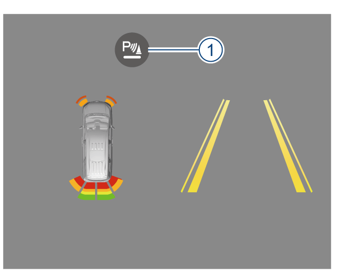
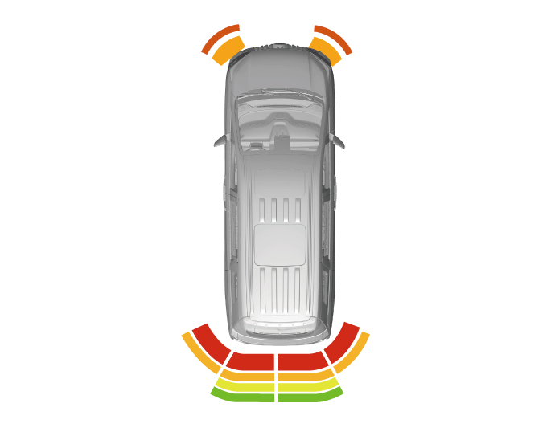

–在倒车过程中，倒车雷达系统已开启时，按软按键①可手动关闭报警音，再按则重新开启。重新启动车辆后倒车雷达系统报警音默认开启。
倒车雷达系统
系统借助雷达传感器发送和接收超声波，利用发送和遇障碍物反射回来的超声波测算车辆与障碍物的距离。
开启和关闭
–整车电源在“ON”挡位时，解除驻车制动，并将换挡杆挂入“R”挡，当车速小于10km/h，倒车雷达系统进入工作。
–当车辆前进速度小于10km/h，前部超声波传感器进入工作；当车辆前进速度大于12km/h时，前部超声波传感器退出工作；当车辆前进速度从12km/h以上降到10km/h以下时，前部超声波传感器再次进入工作。
–当车速大于12km/h时，前部与后部超声波传感器退出工作；将换挡杆移出“R”挡，施加驻车制动，整车电源退出“ON”挡位，倒车雷达系统退出工作。

提示+
建议进行倒车操作时开启倒车雷达系统报警音。
动态示意图标

显示屏左侧出现的动态示意图标，表示当前车辆前方及后方障碍物的距离。图示中车辆雷达条颜色由内到外分别为红色-橙色-黄色-绿色，当障碍物距离车辆越来越近时，颜色线条将从最外层向内层渐变。
此动态示意图标的变化与距离参考警报声的变化同步进行。
距离参考警报声
报警声随着障碍物与前后保险杠之间的距离变化，同时在音响系统显示屏上显示的颜色也相应变化。

雷达传感器分布

前部超声波雷达安装在前保险杠上。前保险杠处超声波雷达只有2颗，且布置位置靠角落，仅可以探测角落局部区域，车辆正前方盲区较大。

后部超声波传感器安装在后保险杠上。
注意+
–应始终保持雷达传感器表面干净，切勿遮盖住雷达传感器。
–为保证保险杠上的雷达传感器功能，须保持其清洁并避免结冰。
–清洁雷达传感器表面时，应使用柔软的湿布，避免刮伤表面。
警告+
–倒车雷达系统不能取代驾驶员对周围环境的观察，驾驶员应集中注意力，根据实际情况安全倒车和调整车位。
–雷达传感器在探测障碍物时存在盲区，倒车时，驾驶员必须注意观察，避免发生刮擦或碰撞事故。
–在狭窄场所或上坡倒车时，雷达传感器可能探测到栏杆、树木或斜坡面，此属正常现象。
–倒车速度较快时，雷达传感器探测准确性有所下降，建议倒车速度不超过10km/h。倒车雷达系统持续发出警报声时，此时车辆与障碍物已极其接近，须立即停止倒车，谨防发生事故。
警告+
–用高压清洗器清洗雷达传感器时，应短时轻柔，喷嘴与传感器至少保持30cm以上的距离。
–若有水珠附着在保险杠上的雷达传感器表面，则传感器的灵敏度会有所下降，拭去附着在传感器上的水珠即可恢复其灵敏度。
–某些物品的表面不能反射雷达传感器发出的信号，导致雷达传感器探测不到此类物品或身着此类服装的人。
–车外噪音源可能干扰雷达传感器，导致探测不到物体。
–雷达传感器属精密部件，切勿私自拆装维修。因私自拆装维修所导致的损坏，本公司概不承担质量担保。
— 页面到底了 —